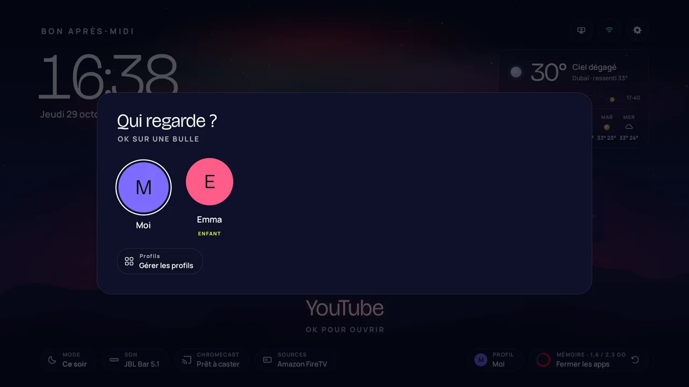
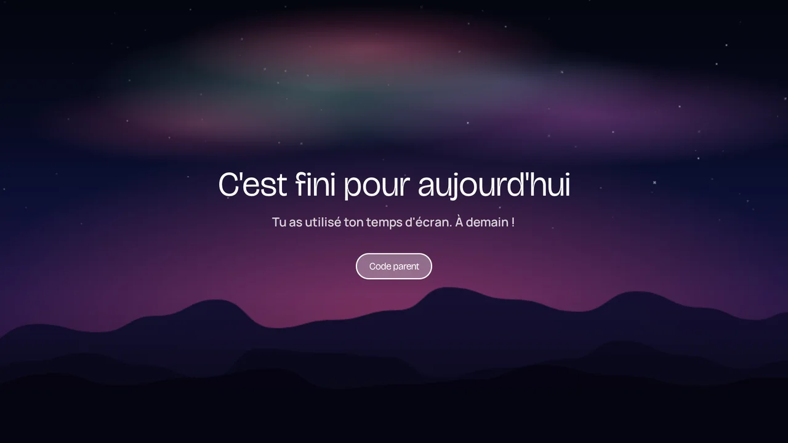
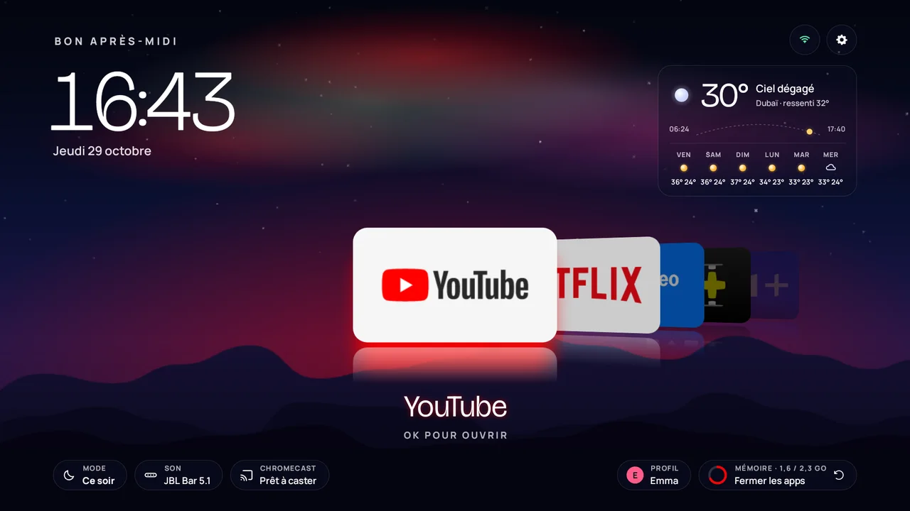

Tu l'as payée. Elle est à toi.
Coupe les pubs et le pistage installés d'usine sur ta TV Android TV ou Google TV, et donne-lui un accueil qui te ressemble. À la télécommande, sans ordinateur.
- Pas d'ordinateur
- Pas de téléphone
- Pas d'IA
- Juste la télécommande


Sur une vraie TV
L'accueil, en vrai
Filmé sur une vraie TV, en parcourant le dock à la télécommande. L'aurore prend la couleur de chaque appli.
Une TCL C89B sous Google TV 14, sans montage.
Ce qui est coupé
Tout ce que tu n'as jamais demandé
- Les pubsPromos, rangées sponsorisées et démos de magasin mises par le fabricant.
- Le pistageTélémétrie, identifiants publicitaires et rapports d'usage.
- Le superfluLes restes que personne n'utilise sur une TV.
- Jamais tes applisNetflix, YouTube, Prime Video et les autres ne sont jamais touchées. Ce dont la TV a besoin pour démarrer, lire une chaîne ou une entrée HDMI n'est jamais proposé.

Un accueil bien à elle
Un ciel de nuit vivant, tes applis devant
- Une aurore aux couleurs de ton appliChoisis Netflix et le ciel devient rouge. Un ciel calme, qui ne bouge que quand tu bouges.
- Ton dock, dans ton ordreChoisis les applis de l'accueil pendant l'assistant, change-les quand tu veux.
- Réglages rapides sur la touche engrenageVolume, image, son, sources, Wi-Fi et Bluetooth sans quitter l'accueil.


Profils et mode enfant
Une TV, un accueil pour chacun
- Qui regarde ?Au réveil de la TV, chacun appuie sur OK sur sa bulle et retrouve son dock et sa couleur.
- Un profil enfant reste dans ses applisSeulement les applis que tu choisis, une heure de coucher, un temps par jour et un volume maximum. Une appli ouverte autrement le ramène à son accueil.
- Un code parent, et rien ne quitte la TVQuatre chiffres lèvent les limites pour la soirée ou donnent 30 minutes de plus. Les profils et le temps d'écran restent sur la TV.



Comment ça marche
Trois étapes, tout à la télécommande
Une dizaine de minutes. Rien n'est supprimé : les applis sont désactivées, et un bouton les rallume.
-
Active le mode développeur
Paramètres › Système › À propos : clique 7 fois sur Build de l'OS Android TV. Puis Paramètres › Système › Options pour les développeurs : active Débogage USB.
-
Installe avec Downloader
Installe l'appli gratuite Downloader depuis le Play Store de ta TV, tape le code 8225348, puis installe OwnYourTV.
-
Suis l'assistant
Accepte une fois la demande de débogage. L'assistant reconnaît ta TV, te propose le nettoyage recommandé, le nouvel accueil et ton dock. Puis un appui : c'est fait.
Deux façons, le même résultat
Sur la TV
À la télécommande
Les trois étapes ci-dessus : l'appli OwnYourTV te guide sur l'écran de la TV, du nettoyage au nouvel accueil.
Il te faut : la télécommande. Rien d'autre.
Depuis un ordinateur
Avec un agent IA
Aucune appli à télécharger sur la TV : ton ordinateur lui parle par le Wi-Fi. Active le mode développeur (étape 1), puis colle ceci dans Claude Code ou tout agent capable de lancer des commandes :
Clone https://github.com/pimado1/ownyourtv et suis son PROMPT.md pour nettoyer ma TV. L'adresse IP de ma TV est :
L'agent installe ce qu'il lui faut, te montre ce qu'il a trouvé, demande avant de désactiver quoi que ce soit et t'explique comment tout annuler. Le nouvel accueil n'est installé que si tu le demandes.
Il te faut : un ordinateur sur le même Wi-Fi, un agent IA, l'adresse IP de ta TV (Paramètres › Réseau). Tu préfères taper les commandes toi-même ? ownyourtv.py
Les deux utilisent les mêmes listes et les mêmes règles de sécurité, et les deux peuvent tout remettre comme avant.
Sûr par conception
Pensé pour que ta TV ne reste jamais bloquée
Une TV, ça ne se réinitialise pas sur un coup de tête. OwnYourTV prévoit les mauvais jours.
Désactivées, jamais supprimées
Chaque appli reste sur la TV. Seules les applis vérifiées sur une vraie TV sont cochées, et ce dont la TV a besoin n'est jamais proposé.
Après une mise à jour de la TV
Les mises à jour rallument souvent les pubs. OwnYourTV le repère au démarrage et sur son accueil, et les recoupe en un appui.
Un accueil de secours
Si le nouvel accueil n'arrive pas à démarrer, un accueil simple avec toutes tes applis prend le relais. Jamais d'écran noir.
Un bouton remet tout
« Tout remettre » rallume chaque appli et ramène ton accueil d'origine.
Quelles TV
Android TV et Google TV, modèle par modèle
OwnYourTV reconnaît des centaines de modèles TCL, Sony, Xiaomi, Philips, Hisense et d'autres, grâce à des listes testées sur de vraies TV. Elle change l'accueil comme chaque modèle le demande, ou le laisse tranquille quand un modèle ne peut pas en prendre un autre sans risque. Ci-dessous, les TV que les utilisateurs d'OwnYourTV ont partagées depuis l'appli.
Est-ce sans risque pour ma TV ?
Les applis sont désactivées, jamais supprimées, et seules celles vérifiées sur une vraie TV sont cochées. Sur un modèle reconnu, OwnYourTV garde ce dont ce modèle a besoin. Si son accueil n'arrive pas à démarrer, un accueil de secours avec tes applis prend le relais. « Tout remettre » dans l'appli rallume chaque appli coupée et ramène ton accueil d'origine.
Une mise à jour de la TV a remis les pubs
Ça arrive : les fabricants rallument leurs applis pendant les mises à jour. OwnYourTV le repère au démarrage suivant et propose de les recouper en un appui. Active le débogage USB quand elle le demande, puis recoupe-le à la fin.
Chacun, ou un enfant, peut-il avoir son propre accueil ?
Oui, depuis la version 1.8. Chaque profil a son dock et sa couleur, choisis avec une bulle au réveil de la TV. Un profil enfant ne montre que les applis que tu choisis, avec une heure de coucher, un temps par jour et un volume maximum. Quand le temps est écoulé, un écran « Bonne nuit » apparaît, puis l'écran s'assombrit jusqu'à la mise en veille de la TV. Un code parent à 4 chiffres lève les limites, et une appli ouverte par les réglages ou par la voix ramène l'enfant à son accueil. Ça se règle avec la pastille Profil, en bas de l'accueil.
Comment avoir les nouvelles versions ?
Depuis la version 1.7, l'accueil te prévient quand une nouvelle version sort. Appuie sur Mettre à jour : OwnYourTV vérifie qu'elle est signée avec la même clé, puis Android te demande de confirmer. Tes choix et ton dock restent. Avant la 1.7, installe-la par-dessus l'ancienne avec le même code Downloader.
Google Play Protect dit que l'appli est bloquée
Play Protect prévient pour toute appli installée hors du Play Store. Choisis « Plus de détails », puis « Installer quand même ». OwnYourTV est open source : tout le monde peut lire ce qu'elle fait sur GitHub.
L'appli me demande de reconnecter le Wi-Fi
Sur certaines Google TV (Xiaomi, entre autres), le réseau Wi-Fi est enregistré par l'appli de première installation de la TV. Changer d'accueil coupe cette appli, ce qui oublierait le réseau. L'assistant te guide : oublie le réseau, reconnecte-le, et l'accueil peut changer sans couper Internet.
Ma TV ne veut pas d'un autre accueil
Certains modèles n'acceptent que leur propre accueil. OwnYourTV les connaît et te le dit : les pubs et le pistage sont quand même coupés, et ton accueil actuel reste.
Je peux le faire depuis un ordinateur ?
Oui, de deux façons : colle un prompt dans un agent IA comme Claude Code (voir Comment ça marche), ou lance toi-même ownyourtv.py depuis Windows, macOS ou Linux, avec adb (From a computer sur GitHub).
OwnYourTV collecte-t-elle des données ?
Non. Tout se passe sur la TV. À la fin, l'appli propose de partager le modèle de ta TV et ce qui a marché, anonymement, seulement si tu appuies sur Partager. Détails sur la page confidentialité.
Combien ça coûte ?
Rien. OwnYourTV est gratuite et open source, sous licence MIT.
Prêt ?
Dix minutes, la télécommande, et elle est à toi
Gratuit, open source, et un bouton remet tout comme avant.